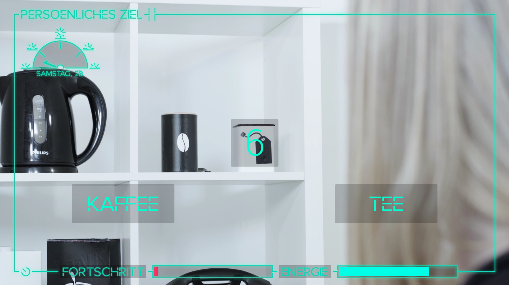

As a full time programming intern for six months at the German indie games developer studio Studio Fizbin.
Miri is Thirteen
Someday in the 2000s, a 13-year-old teenage girl is trying to get ready for the coolest pool party in her school year. I worked on the game as a game designer, writer, game programmer and the project lead during a collaborative university project. Play. Teaser. Game Overview. Gameplay Video.
Genie Escape
A magical game about escaping. See the trailer I cut for the game. I worked on the game as a game programmer, project manager, sound designer and the project lead during a collaborative university project. Play. Game Overview. Gameplay Video.
Prototype is a little narrative top-down shooter my friend and I made with unity. you wake up in a laboratory with a strange power and need to solve the mystery around your origin. Play. Game Concept
Overload is a decision-based short movie project, which lets you step into the shoes on Alyssa during her morning. Her ultimate goal is to write her assignment and gain lots of progress. However, she also needs to keep track of her energy level. Over the course of four minutes, you can make about six decisions of how Alyssa should proceed with her day. Starting with simple questions like café or tea, both affecting her progression and energy level in one way or another. The project was braced by film students whereas I did all the programming and supported them with their decisions-based game design. Overload is simple and clean in its message of reminding oneself to sometimes take a break from work, especially when you are passionate about it (and also when you’re not).

Sumo Smash Figthers is just a fun little fighting brawler for two players. I mean sumos. Very athletic sumos to be precise. You can double jump and dash. There are for kinds of random item drops: A red slim, which means health for the red sumo, the blue gets a health decrease if they collect it. A blue slime that works exactly like the red one, just the other way around and a green slime, from which both players get a small amount of health increase. There is also a dangerous bomb, that blows players away if they are too close to it and starts a foggy effect for a short time. All sprites and images belong to Mimimi Production. Play.